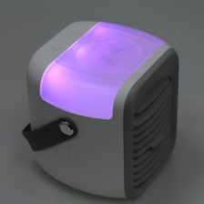
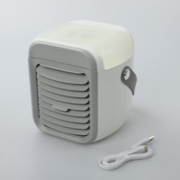

Top Hong Kong Engineers Invent the World's Coldest Tiny Portable AC...
And It Cools Down Your Dorm Room in Just 30 Seconds
By Ronald G. | Jul 25, 2020
If you’ve ever lived in a dorm you already know just how uncomfortable it can get.
A lot of the older dorm buildings don’t have any air conditioning at all. And if they do have it, it barely even works. Believe me, just living under such conditions (let alone studying) can be a real challenge when you feel like you’re melting or find yourself drenched with sweat.
Back when I was still in college in the ‘90s, you just had to tough it out. There just wasn’t anything you could do about the oppressive heat. You had to grit your teeth and just work through it.
But now, thanks to the pioneering work done by a crack team of engineers in Hong Kong, today’s students can turn a boiling hot dorm room icy cold… in just a matter of minutes. And all at an amazingly affordable price!
They’ve invented the world’s coldest portable AC… and after months of testing, and the incredible reaction from the public, this Hong Kong team is bringing their incredible invention to the United States for the first time.
My son is in college right now, and he often complains about the unbearable heat in his dorm room. So I decided to gift him with a Blaux Mini Portable AC of his own.
My Son Couldn’t Stand the Heat in His Dorm Room!
My son doesn’t really complain about much. We didn’t have much money when he was growing up, so he was used to making do with less than perfect conditions. He’s a real trooper that way.
But even he couldn’t stand the way his dorm would heat up in the summer months. It was one thing for his dorm to be hot all day. He pretty much accepted that as an unpleasant fact of life.
But what really bothered him was how that old dorm building of his would retain heat. Even when the night had fallen and it had cooled down outdoors, his dorm was still boiling hot inside.
It was like an oven in there, making the nights in his dorm just as hot as the daytimes were. He told me he had started doing his studies on a bench outside of his dorm at night, just because the heat indoors never went away.
The Features That Make the Blaux Portable AC the Best Solution for Boiling Hot Rooms
Of course, I wasn’t going to send just any AC unit to my son. I did a lot of research, and most of the so-called “portable AC units” you can buy are little more than glorified fans. They can produce some cold air, but if you don’t have your face crammed right into the unit, you can barely even feel it.
That’s what’s so great about the Blaux Portable AC unit. Hong Kong can have some famously hot weather, with temperatures as high as 85 degrees, even at night. So the engineers in Hong Kong really had their work cut out for them.
So here is a list of the most important features they decided their AC unit absolutely HAD to have:
3 Cooling Modes
The engineers in Hong Kong realized that a “one size fits all” approach to air conditioning was not acceptable. They quickly realized that some people prefer just a slight cooling, while others really want to bring on the chill! So they made their AC unit feature three different cooling modes, so you can set it to produce the exact amount of cooling you desire. And the unit has adjustable blades, too, so you can point your cool blast of air in any direction you choose!
Wireless and Rechargeable
Featuring a high capacity 2000 mAh Battery, the Blaux Portable AC unit can be recharged from any USB outlet. And since the unit is completely wireless, you’re not stuck next to the electrical outlet, so you can take it wherever you need it most (even outdoors!). And of course, the Blaux Portable AC comes with its own charging cable included with every order.
Easy to Operate
The engineers in Hong Kong quickly realized that they needed to create a device that you didn’t need to be an engineer to operate! So one of their top design goals was to make the unit easy enough for anybody to use. You simply fill it with water and turn it on! Then set the fan level you desire, and you’re done!
Modern and Compact Layout
Needless to say, nobody wants an AC unit that is huge, ugly, or takes up a lot of space – especially in an already-cramped dorm room. That’s why the Hong Kong engineers made the Blaux Portable AC compact and appealing to look at. It fits in perfectly with any kind of décor, and is a perfect complement to any home, dorm, or apartment.
Noise Free
All of these features would be completely useless if the AC unit made a lot of noise and disturbed the studying habits of students! So the engineers who designed the Blaux Portable AC unit made sure to make the device as quiet as possible. You can’t even hear it unless you’re really listening out for it!
Energy Bill Savings
Have your electricity bills SOARED during a heat wave before? I’ve known people who have amazing AC built into their homes, but they can’t use them because they make the electricity bill go THROUGH THE ROOF. But the Blaux Portable AC is completely different – it uses the same amount of electricity as a simple electric fan. This results in HUGE SAVINGS on your electrical bill!
Easy to Clean Filter
The Blaux Portable AC features a cleanable, replaceable filter that purifies the air, removing dust, pollen, and small particles from the airstream. This device is perfect for people who suffer from allergies and other dust-borne complications.
Cools the Room and Maintains Air Humidity
The problem with a lot of traditional AC units is that they act as dehumidifiers, removing all of the moisture from the air. This can result in dry skin, chapped lips, and even sinus headaches. But the Blaux Portable AC regulates the moisture in the air, meaning you can run it all day and night without giving yourself chapped lips!
The Blaux Portable AC Turned My Son’s Dorm Room into an Icebox!
After doing all of my research, I knew that the Blaux Portable AC was the best portable AC unit on the market. But what really sold me were all of the customer reviews I read. People were using terms like “miracle device” and “literal lifesaver” – and I knew right away that all of these people couldn’t be wrong.
So I ordered a Blaux Portable AC unit, and had it delivered to my son’s dorm. And just a few days later, he called me on the phone.
“Dad,” my son said, “are you freaking kidding me??”
I asked him if something was wrong. Maybe he got sent a defective unit?
“Where did you find this thing??,” he demanded. “This thing is INCREDIBLE. I mean, I can’t believe it! I just stare at it all day thinking ‘this can’t be real!’. The ice-cold air this thing pumps out is just ASTOUNDING!”
He told me that his dorm could now be set to any temperature he desired. Instead of boiling to death, he was now relaxing comfortably in a perfectly-chilled room – even at high noon! And even better, he told me the Blaux AC unit had allowed him to sleep better than he had in weeks, making him more rested and alert for each of his classes.
“I’ll say one thing, dad, this thing sure has made me the most popular guy on campus. Now everybody wants to hang out in my dorm room. You wouldn’t believe how many new “friends” I’ve made in just the last week. They just appear at my doom, day and night!”
“I’ve had to start kicking them out, actually. Can’t blame them, though, it IS perfectly comfortable in my dorm room… unlike the rest of the campus.”
“One guy even offered me $20 bucks if he could borrow my AC unit for just the evening. He said he had a big assignment to write, and he needed to borrow my AC just to get through it. I tell you, people have gone CRAZY over this little AC unit. Please email me the website where they can order their own, these people are driving me insane!”
Seeing how thrilled my son was with his Blaux Portable AC unit, I decided to order one for myself. Let me tell you, it really is amazing. I plugged mine in and was blasted with a stream of ice-cold air. Not “cool” air, mind you – we’re talking ice cold air. In fact, it was so cold, I had to turn it down to the lowest setting.
I thought the Blaux Portable AC unit would be the perfect gift for my son, but I had no idea how great it would be for me, too! I do woodworking in the garage, but without AC it’s just too hot to work in there in the summer. But with the Blaux Portable AC, I can work in my garage on even the hottest of days.
I can’t believe such a small unit can push out so much cold air, and at such an amazingly affordable price! My electricity bills have plummeted, and I can make any room in the house as cool as an icebox!
It really is astonishing!
LIMITED TIME DISCOUNT OFFER
(VERY LIMITED RUN – PLEASE CHECK FOR AVAILABILITY!)
The reports are in. Every year is hotter than the previous year.
If the heat is driving you nuts, you can’t do yourself a bigger favor than getting a Blaux Portable AC unit of your own. It can filter dust from the air you breathe, make it icy cold on even the hottest of days, and it saves you BIG BUCKS in the process!
But as summer approaches and the heat rises, people are snatching up the Blaux Portable AC as fast as the company can manufacture them. So if you don’t want to cook like a strip of bacon this summer, you’d better order your Blaux Portable AC before they start selling out!
If you order right now, you can still get an incredible deal of 50% off the usual price. Take advantage of this exclusive offer right away!
Get the latest, factory-fresh Blaux Portable AC right now at a special introductory discount!
Comments

Jermaine B. replied:
Jul 26, 2020 at 3:44 pm
I live in a rent controlled apartment, and my rent is so low I can’t afford to move anywhere else. Unfortunately, the AC in my apartment building totally sucks. I was burning up until a friend let me try out his Blaux Portable AC. Now I’m in love with the thing! I’d pay ten times the price for comfort like this, and no, I’m not kidding.

Jessica C. replied:
Jul 26, 2020 at 7:47 pm
My job requires travel to all sorts of small towns, and I often get stuck in hotels and motels that don’t have AC or the AC is virtually pointless. I can’t afford to show up to meetings looking sweaty and disheveled, so for me, the Blaux AC unit is a total lifesaver! And I love the fact that I can charge it over any USB connection!

Tom F. replied:
Jul 25, 2020 at 1:04 pm
The Blaux Portable AC is just the greatest invention ever. I can’t believe how cold the air this little unit blasts out. I used to feel like a roast in the oven, but the Blaux Portable AC has turned my bedroom into a cool, dust free paradise. I love this thing, and I recommend it to all my friends!
Betty S. replied:
Jul 24, 2020 at 4:12 pm
“I’m a college student and my dorm room would become completely unbearable during the summer months. It got so bad I even started looking at apartments off-campus. Thank heavens for the Blaux Portable AC! It makes my dorm room perfectly comfortable, even on the hottest of summer days!”